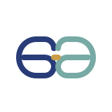

Comparar peso visual, material demostrativo y uso.
ARMAZONES · LENTES · AJUSTES
Una óptica organizada para comparar antes de visitar.
Muestra servicios, estilos de armazón y proceso de atención sin usar rostros, marcas ni recomendaciones basadas en apariencia personal.
Nombre e identidad ficticios utilizados exclusivamente con fines demostrativos.
Armazones
Lentes graduados
Ajustes
Examen sujeto a confirmación

Estado: draft. Nombre e identidad ficticios utilizados exclusivamente con fines demostrativos. No está aprobado para catálogo público ni portafolio principal.
Óptica
Servicios y contenido representado.
La experiencia se apoya en comparación de materiales, uso y mantenimiento, no en marcas ni fotos de personas.
- Armazones
- Lentes graduados
- Lentes de sol
- Examen visual sujeto a confirmación
- Ajustes
- Mantenimiento
- Accesorios
- Atención infantil sujeta a confirmación
Explorador de estilos
Explorador de estilos
Compara estilos por uso y mantenimiento. No evalúa tu rostro ni indica qué te favorece.
Clásico
Armazón de lectura comercial, sobrio y fácil de mantener.
Proceso de atención
Una ruta fácil de seguir.
Identificar si necesitas examen, ajuste o lentes.
El negocio confirma disponibilidad y proceso real.
Preguntas frecuentes
Condiciones claras antes de publicar.
¿La demo usa marcas?
No. Los armazones son SVG originales y ficticios.
¿Recomienda por forma de rostro?
No. Evita capturar o clasificar apariencia personal.
¿Los precios son reales?
No. Esta demo no muestra precios de producto.
Contacto
Datos reales por configurar con el negocio.
Esta demo no inventa teléfono, correo, dirección ni mapa. En un proyecto publicado se cargarían los canales aprobados por el cliente.
- WhatsApp del negocio: por configurar.
- Horario: por confirmar.
- Zona de atención: por definir.
- Redes sociales: solo si el cliente las autoriza.
NEXO26 DIGITAL
Una óptica puede vender claridad antes de vender monturas.
Este concepto organiza alcance, navegación, contenido e interacción para mostrar cómo podría verse una solución similar después de recibir materiales y aprobación.